PartDesign Bearingholder Tutorial I/pl
| Temat |
|---|
| Modelowanie |
| Poziom trudności |
| Użytkownik zaawansowany |
| Czas wykonania |
| nieokreślony |
| Autorzy |
| NormandC |
| Wersja FreeCAD |
| 0.19.23300 lub nowszy |
| Pliki z przykładami |
| brak |
| Zobacz również |
| - |
Krótko o celu
Celem tego poradnika jest zapoznanie użytkownika z dwoma różnymi przebiegami pracy dla tworzenia części odlewanej z pochyleniami i zaokrągleniami. W zależności od tego, z jakich innych programów CAD korzystałeś, jeden lub drugi może być ci znany. Jako przykład roboczy będziemy modelować prostą oprawkę łożyska.
To jest pierwsza część poradnika. Wykorzysta on coś, co można nazwać przepływem pracy pojedynczej zawartości, używając (prostszej) górnej części uchwytu jako przykładu.
Aby przejść przez ten poradnik należy aktywować środowisko pracy Projekt Części.
{kind=link}
Poradnik projektu uchwytu łożyska - ukończony uchwyt (górna część)
Założenia projektowe
Oprawka powinna być w stanie utrzymać łożysko o średnicy 90 mm i szerokości do 33 mm (np. DIN 630 typ 2308). Łożysko wymaga kołnierza o wysokości co najmniej 4,5 mm w oprawie (i na wale). Górna część oprawy zostanie przykręcona do dolnej za pomocą dwóch śrub 12 mm. Po obu stronach łożyska powinien znajdować się rowek umożliwiający zamocowanie standardowego pierścienia uszczelniającego wał DIN 3760: 38x55x7 lub 40x55x7 z jednej strony i 50x68x8 z drugiej strony.
Uchwyt będzie odlewem piaskowym o minimalnej grubości ścianki 5 mm, kącie zanurzenia 2° i minimalnym promieniu zaokrąglenia 3 mm.
Konfigurowanie geometrii szkieletu
{kind=link}
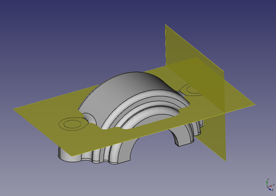
Idea geometrii szkieletowej polega na uchwyceniu podstawowych wymiarów projektu w pojedynczym elemencie odniesienia (np. płaszczyźnie lub osi). Gdy wymiar projektu ulegnie zmianie, wszystko, co należy zrobić, to zmienić cechę szkieletu. Jeśli model jest dobrze zbudowany, wszystkie jego cechy zostaną ponownie obliczone, aby odzwierciedlić zmianę projektu. Zmniejsza to niebezpieczeństwo, że w złożonym modelu, w którym podstawowe wymiary projektowe są używane w wielu miejscach, zapomnisz je gdzieś zmienić.
Alternatywą dla geometrii szkieletowej jest posiadanie tabeli podstawowych wymiarów projektowych, która przypisuje nazwę symboliczną do każdego wymiaru, a następnie używa nazwy symbolicznej wszędzie tam, gdzie wymiary są wymagane do zbudowania modelu. FreeCAD nie pozwala jeszcze na takie podejście.
{kind=link}
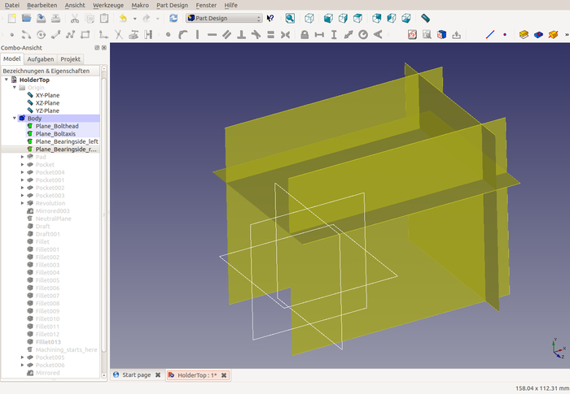
W przypadku oprawy łożyska dwa najważniejsze wymiary konstrukcyjne to odległość między śrubami (która ogranicza rozmiar łożyska, które można zastosować) oraz wysokość łbów śrub. Wybrane wymiary to
- Odległość między śrubami: Promień łożyska (45) + grubość ścianki (5) plus promień otworu na śrubę (7) = 57 mm, więc płaszczyzna pionowa będzie przesunięta o 57 mm od płaszczyzny YZ. Aby utworzyć tę płaszczyznę odniesienia, wybierz płaszczyznę YZ, a następnie wybierz opcję utworzenia nowej płaszczyzny odniesienia. Wprowadź przesunięcie w oknie dialogowym, które zostanie otwarte
- Wysokość łbów śrub: Została ona wybrana jako przesunięcie o 28 mm w stosunku do płaszczyzny XZ.
Dla wygody można utworzyć dwie dodatkowe płaszczyzny odniesienia, aby odzwierciedlić ilość materiału, który musi zostać odcięty od boków oprawy łożyska. Są one przesunięte o +22 i -22 względem płaszczyzny XY.
Zaleca się nadawanie jasnych nazw geometrii szkieletu. W większości przypadków będziesz chciał wyłączyć widoczność płaszczyzn odniesienia, ponieważ zaśmiecają one widok, a jeśli płaszczyzny mają przyjazne nazwy, możesz po prostu wybrać je według nazwy zamiast z widoku.
Geometria bryły
{kind=link}
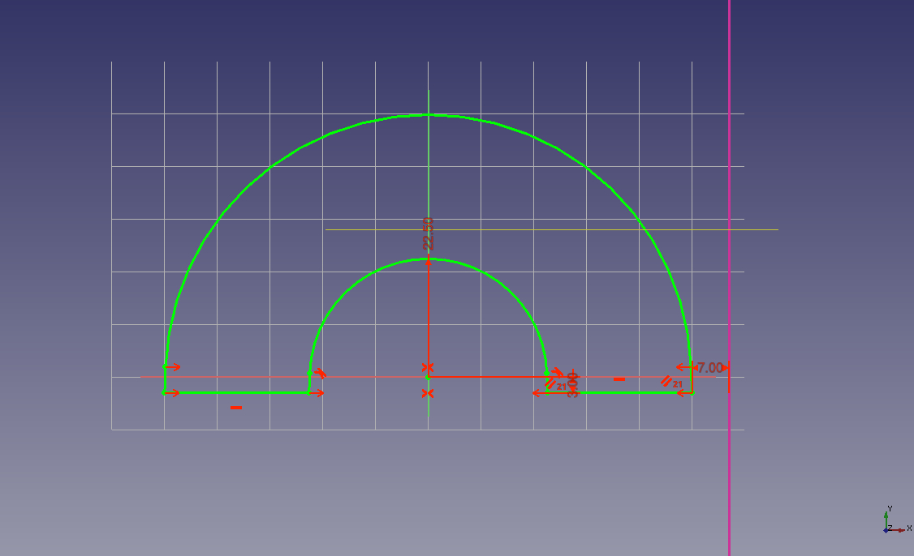
Teraz nadszedł czas, aby rozpocząć tworzenie prawdziwej geometrii. Szkic pierwszego wyciągnięcia jest pokazany po prawej stronie. Jest on umieszczony na płaszczyźnie XY. Istnieją tylko trzy wymiary: Promień wewnętrzny (22,5 mm), naddatek na obróbkę (3 mm) u podstawy jako przesunięcie względem płaszczyzny XZ oraz odległość od płaszczyzny odniesienia reprezentującej oś śruby (7 mm). Oznacza to, że jeśli później przesuniesz płaszczyznę odniesienia, wyciągnięcie automatycznie dostosuje swój promień zewnętrzny. Pamiętaj, że zanim będziesz mógł użyć płaszczyzny odniesienia do wymiarowania, musisz wprowadzić ją jako geometrię zewnętrzną do szkicownika.
Prawdopodobnie zastanawiasz się, dlaczego na dole każdego łuku znajduje się mały prosty odcinek. Segment ten zapewnia, że kąt pochylenia łuków będzie wynosił 2 stopnie. Może to wyglądać na dużo pracy dla bardzo małej korzyści, ale wiele programów CAD (a może kiedyś FreeCAD) ma narzędzia, które podświetlają model bryłowy w różnych kolorach i natychmiast pokazują wszystkie powierzchnie, w których kąt pochylenia nie jest prawidłowy. Nie chcesz, aby stało się to z twoim modelem, zwłaszcza po nałożeniu wielu zaokrągleń!
Po wykonaniu szkicu (co jest nieco trudne ze względu na 2-stopniowe linie styczne), po prostu umieść go symetrycznie względem płaszczyzny szkicu o długości 62 mm: 34 mm na łożysko, 2x 9 mm na pierścienie uszczelniające, 2x 5 mm na grubość ścianki.
{kind=link}
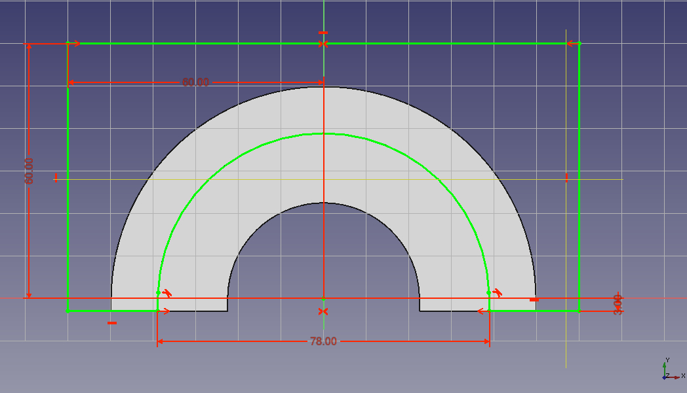
Następnie chcemy odciąć trochę materiału w miejscu, w którym znajdują się pierścienie uszczelniające, ponieważ ich średnica zewnętrzna jest znacznie mniejsza niż średnica łożyska. Najprostszym sposobem na utworzenie szkiców jest zaznaczenie szkicu wyciągnięcia, a następnie wybranie opcji "Powiel zaznaczenie" z menu edycji. Następnie można ponownie zmapować szkic do boku wyciągnięcia i zmodyfikować go tak, jak pokazano na rysunku.
Jedyne dwa ważne wymiary na szkicu to 3 mm naddatku na obróbkę na dole i średnica wewnętrzna 78 mm: 68 mm na zewnętrzną średnicę pierścienia uszczelniającego + 2x 5 mm grubości ścianki. Ponieważ pierścień uszczelniający po drugiej stronie będzie miał tylko 55 mm średnicy, wycięcie może mieć tutaj 65 mm.
Po utworzeniu szkicu, wsuń go do płaszczyzny odniesienia oznaczającej stronę łożyska plus 5 mm grubości ścianki. Jeśli kiedykolwiek będziesz chciał zmodyfikować oprawę, aby była w stanie pomieścić szersze łożyska, wszystko, co musisz zrobić, to zmienić wymiar tych płaszczyzn odniesienia, a głębokość wycięcia podąży za tym.
{kind=link}
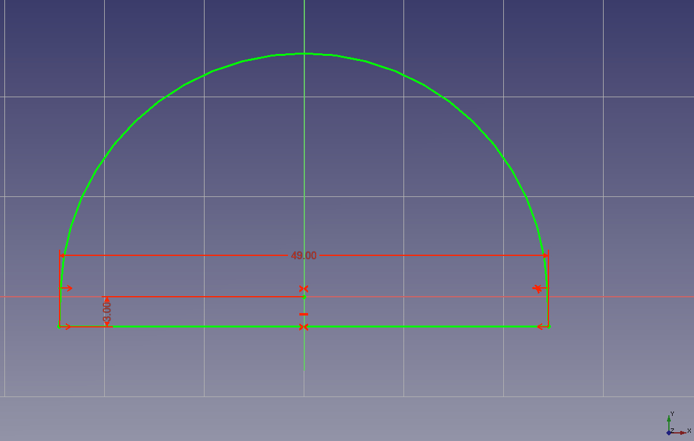
Aby zmniejszyć ilość wymaganej obróbki, chcemy również odciąć trochę materiału wewnątrz uchwytu. Ponownie, powielenie szkicu pierwszego wyciągnięcia jest wygodne. Nie trzeba go nawet przekształcać. Ponownie, jedynymi ważnymi wymiarami są naddatek na obróbkę (3 mm) i średnice zewnętrzne: 84 mm dla miejsca, w którym będzie znajdować się łożysko (90 mm - 2x naddatek na obróbkę), 49 mm dla mniejszego pierścienia uszczelniającego (55 mm - 2x 3 mm) i 62 mm dla większego pierścienia uszczelniającego.
Po utworzeniu szkiców należy je włożyć do kieszeni: Symetrycznie 28mm na wycięcie pod łożysko (34mm - 2x naddatek na obróbkę) i jednostronnie 23mm na wycięcia pod pierścienie uszczelniające: 34 mm / 2 dla połowy szerokości łożyska + 9 mm dla pierścieni uszczelniających - naddatek na obróbkę 3 mm.
{kind=link}
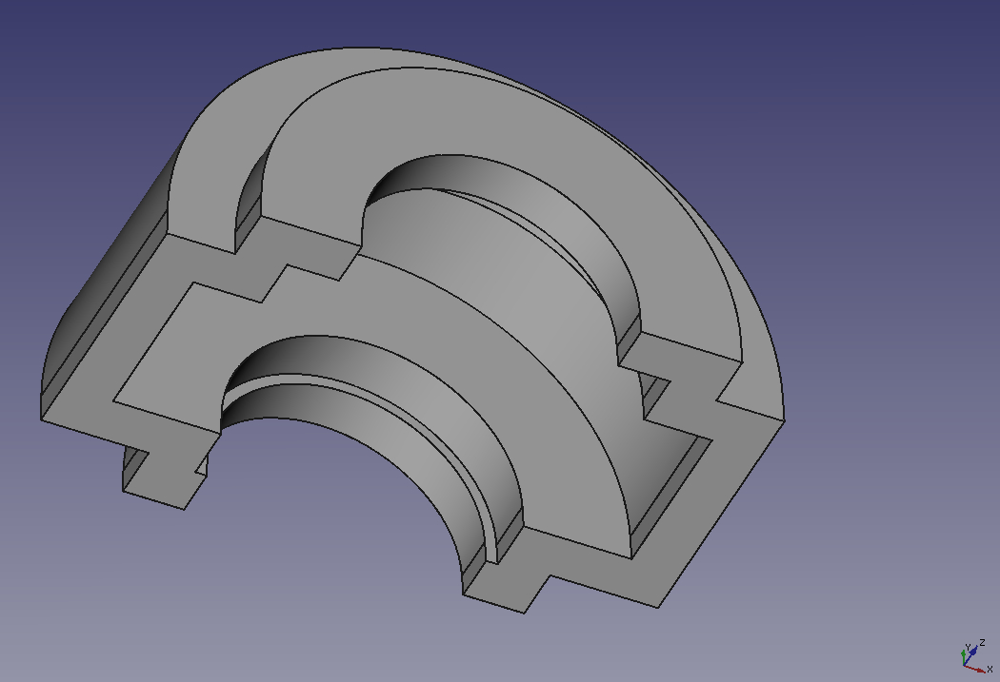
Twoja część powinna teraz wyglądać jak na zdjęciu po prawej stronie. Zwróć uwagę, jak różne wycięcia łączą się, tworząc prawie jednolitą grubość ścianki, co ułatwi odlewanie i zmniejszy ryzyko powstawania porów.
{kind=link}
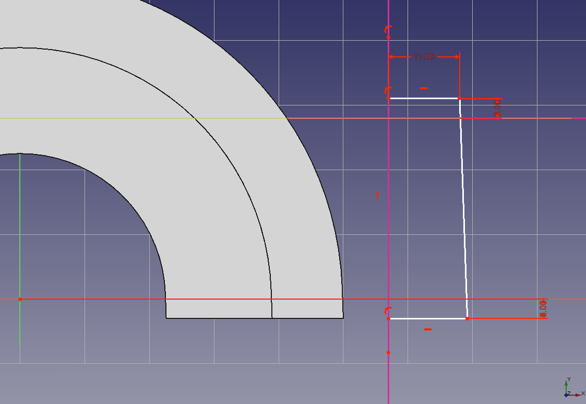
Teraz pozostaje tylko stworzyć materiał, przez który przejdą śruby. Można pokusić się o naszkicowanie ich jako okręgu, a następnie ich obłożenie, ale spowoduje to kłopoty przy późniejszej próbie nałożenia na nie szkicu (zakładam, że jest to słaby punkt OpenCascade). Aby ominąć te problemy, lepiej jest utworzyć szkic z uwzględnieniem kąta szkicu, a następnie obrócić go o 360°.
Tutaj ponownie przydają się płaszczyzny szkieletu. Potrzebna będzie płaszczyzna osi śruby i płaszczyzna łba śruby jako geometria zewnętrzna. Następnie utwórz linię prostą dla osi obrotu i upewnij się, że jest ona ograniczona do płaszczyzny odniesienia osi śruby. Przełącz ją jako geometrię konstrukcyjną. Następnie naszkicuj resztę konturu. Ważne wymiary to naddatek na obróbkę na górze i na dole oraz promień 12 mm: 7 mm dla promienia otworu + 5 mm grubości ścianki.
{kind=link}
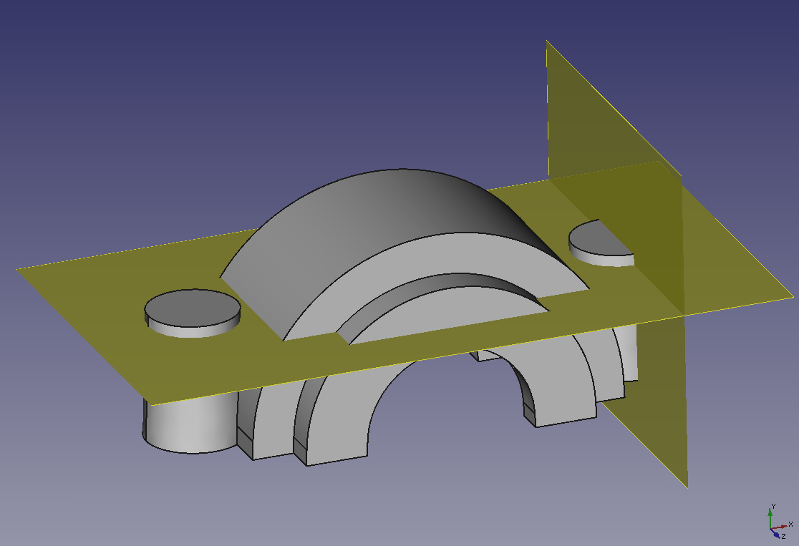
Utwórz wyciągnięcie przez obrót ze szkicu, a następnie wykonaj jego odbicie lustrzane na płaszczyźnie YZ. To cała geometria bryłowa, którą musimy wymodelować. Reszta to kontur i zaokrąglenia.
Stosowanie szkicu do powierzchni bocznych
{kind=link}
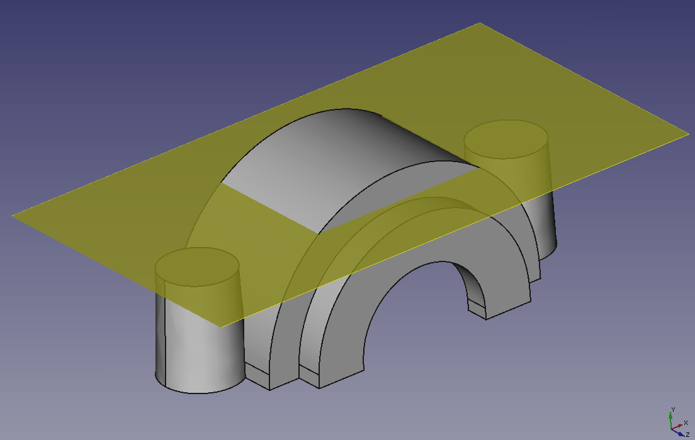
Następnym krokiem jest zastosowanie szkiców na wszystkich powierzchniach. Ważne jest, aby wziąć pod uwagę położenie płaszczyzny neutralnej, czyli płaszczyzny, wokół której powierzchnia jest "obracana". Jeśli wybierzemy jako płaszczyznę neutralną dolną część uchwytu, będziemy mieli problem z grubością ścianki w górnej części uchwytu. Dlatego tworzymy płaszczyznę odniesienia z przesunięciem 40 mm od płaszczyzny XZ jako kompromis między górną częścią uchwytu, która staje się zbyt cienka, a dolną częścią, która staje się zbyt szeroka.
{kind=link}
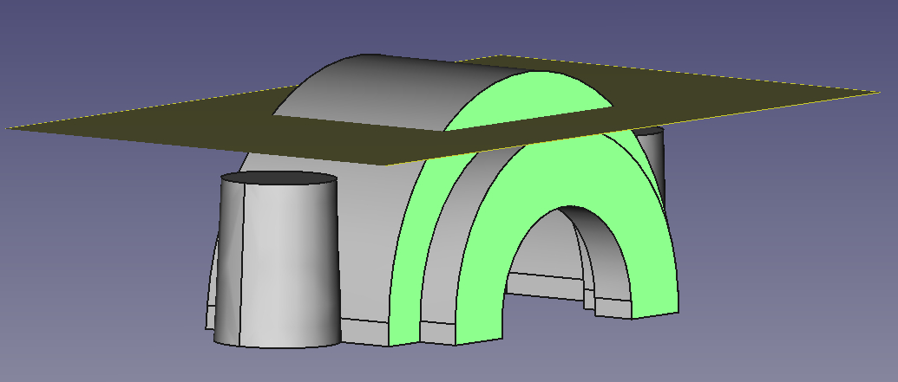
Aby nałożyć szkic na powierzchnię, wybierz tę powierzchnię i utwórz funkcję szkicu. Następnie można wybrać więcej powierzchni do zastosowania szkicu. W przypadku dużych części zaleca się wykonywanie szkicu tylko jednej powierzchni naraz. Oznacza to, że jeśli zmienisz geometrię i szkic nie powiedzie się, tylko ten jeden element ulegnie awarii, podczas gdy jeśli umieścisz wszystkie powierzchnie w jednym szkicu, cały element może ulec awarii z powodu awarii jednej powierzchni. W przypadku małej części, takiej jak uchwyt łożyska, wystarczy utworzyć dwa szkice: Jeden dla czterech powierzchni zewnętrznych i jeden dla powierzchni wewnętrznych.
Okno dialogowe wymusi wybranie płaszczyzny neutralnej przed zakończeniem. Kierunek ciągnięcia można pozostawić pusty, w takim przypadku będzie on normalny do płaszczyzny neutralnej. Nie zapomnij ustawić kąta przeciągnięcia na 2°.
Zaokrąglenia uchwytu
{kind=link}
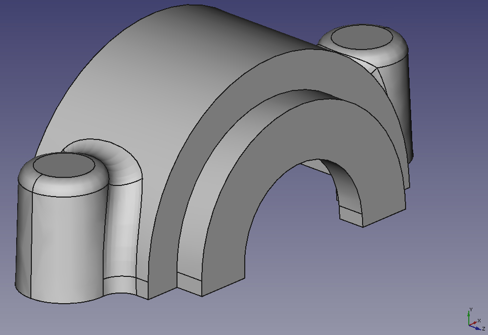
Teraz możemy zaokrąglić część. Zdjęcie pokazuje pierwszy zestaw zaokrągleń. Zacznij od małych okrągłych zaokrągleń i nadaj im promień 4 mm. Nawet jeśli 3 mm byłyby wystarczające zgodnie ze specyfikacją części, promień 4 mm oznacza, że po obróbce pozostanie 1 mm zaokrąglenia, zmniejszając ostrą krawędź powstałą podczas obróbki. Duże zaokrąglenia mają promień 6 mm, aby pomóc rozłożyć siłę ze śrub na resztę części. Byłoby miło, gdyby ten promień był jeszcze większy, ale niestety OpenCascade nie obsługuje jeszcze nakładających się zaokrągleń.
Podobnie jak w przypadku szkiców, w złożonej części należy zaokrąglać tylko jedną krawędź na raz, aby uniknąć niepotrzebnych awarii w przypadku zmiany geometrii podstawowej.
{kind=link}
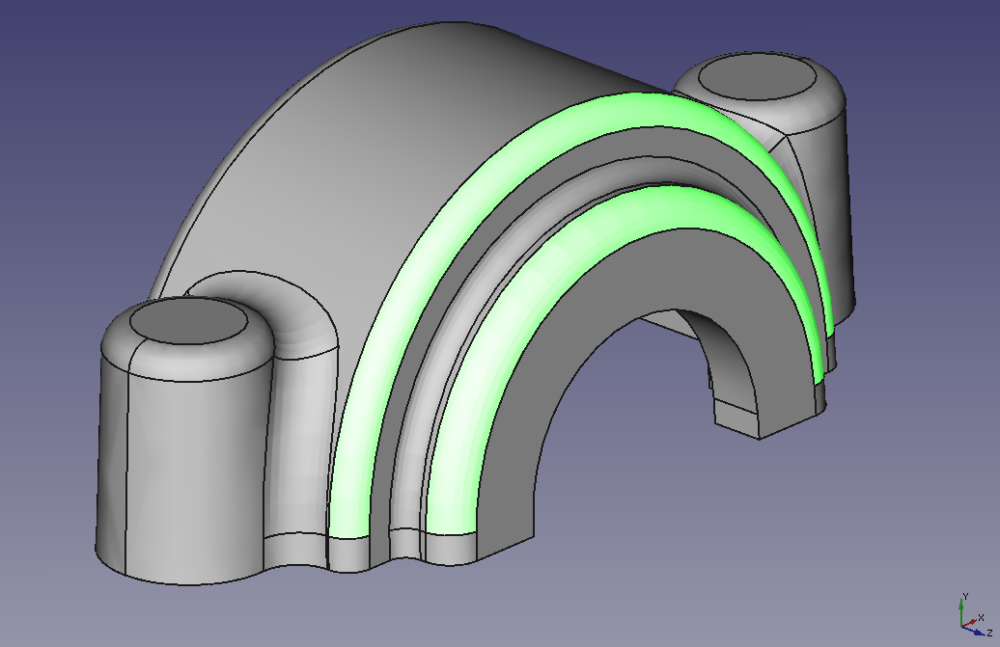
Reszta zaokrągleń ma po prostu promień 3 mm. Patrząc na rysunek po prawej stronie, dwa zaznaczone zaokrąglenia można w rzeczywistości zaokrąglić promieniem 5 mm, aby uzyskać bardziej jednolitą grubość ścianki odlewu. Po obróbce minimalna grubość ścianki wynosząca 5 mm nadal byłaby zachowana. Ponownie jednak fakt, że OpenCascade nie radzi sobie z nakładającymi się zaokrągleniami, uniemożliwia nam zrobienie tego dla wewnętrznego z dwóch podświetlonych zaokrągleń.
{kind=link}
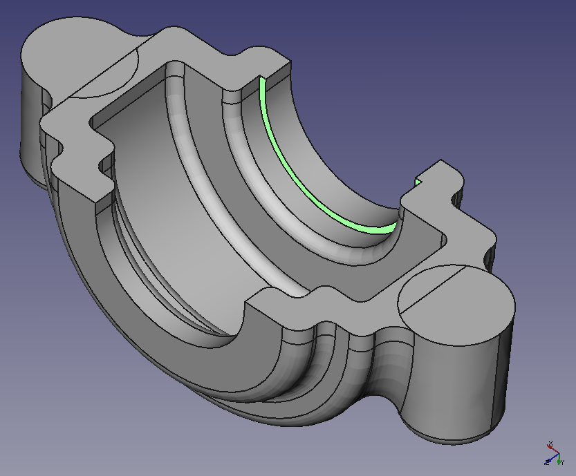
Frezowanie wnętrza części stanowi trudność, której nie można rozwiązać za pomocą obecnych narzędzi w środowisku pracy Projek Części. Podświetlona krawędź nie może być w ogóle zaokrąglona, ponieważ zaokrąglenia nakładałyby się na siebie. Można to obejść, tworząc przeciągnięcie zamiast zaokrąglenia, ale przeciągnięcia nie zostały jeszcze zaimplementowane w środowisku Projek Części. Na razie jesteśmy zmuszeni pozostawić krawędź bez zmian.
{kind=link}
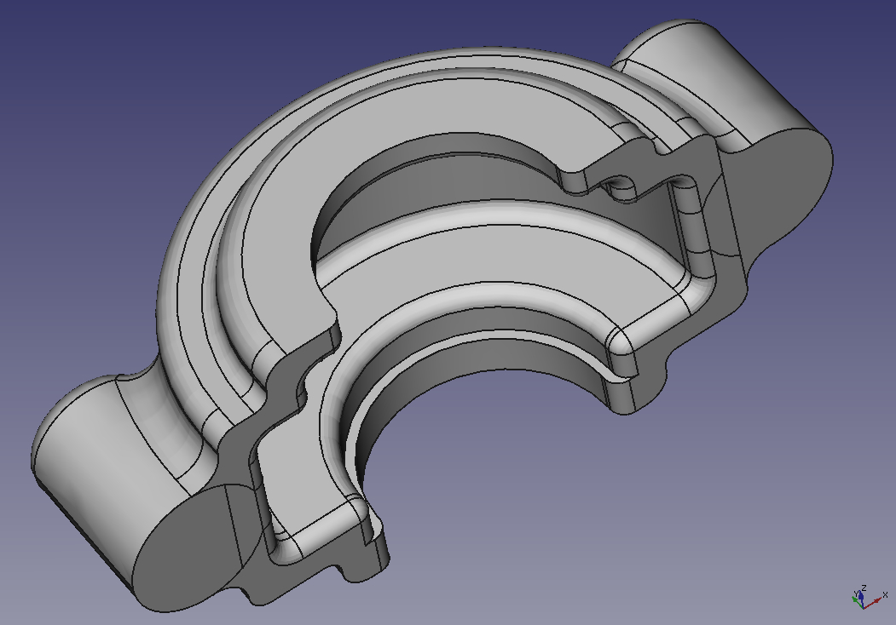
Rysunek po prawej stronie pokazuje gotową część w stanie, w jakim będzie przed obróbką (z wyjątkiem jednej krawędzi, której nie można zaokrąglić). Zauważysz, że jedna krawędź biegnąca wokół całej części została celowo pozostawiona bez zaokrąglenia. Jest to krawędź, na której spotykają się dolna i górna część formy. W tym miejscu zaokrąglenie nie jest możliwe do wykonania (i nie jest wymagane).
Obróbka mechaniczna
{kind=link}
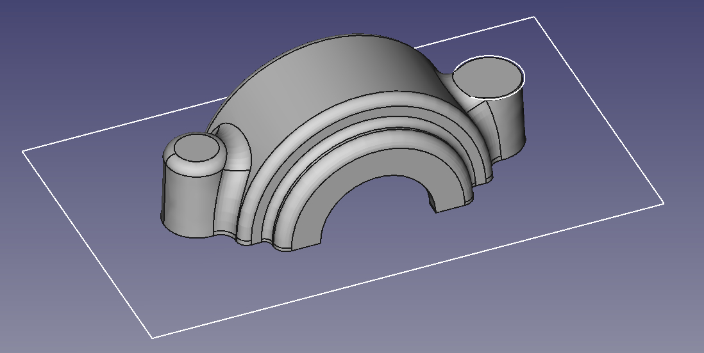
{kind=link}
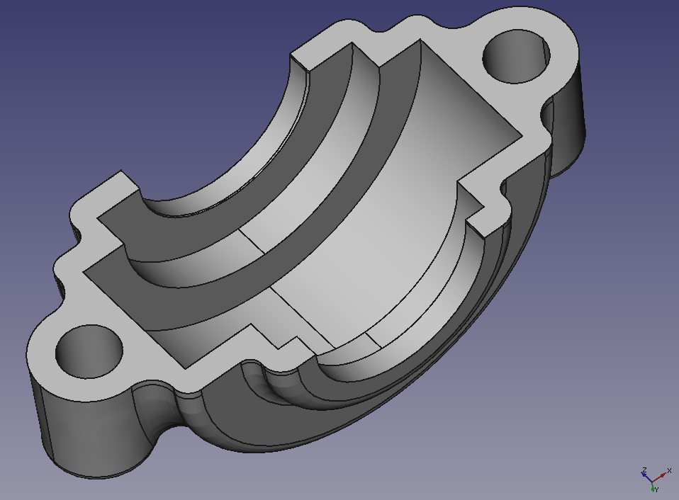
Teraz możemy wyciąć materiał, który zostanie obrobiony z surowej części odlewanej. Jest to bardzo łatwe po zdefiniowaniu geometrii bazowej. Pomysł polega na utworzeniu wszystkich elementów do obróbki (gniazd i rowków) wyłącznie przy użyciu elementów odniesienia. Oznacza to, że będą one całkowicie niezależne od geometrii bryłowej oprawy łożyska, co daje nam kilka dużych korzyści:
- Bez względu na to, jak zmienisz geometrię bryły, cechy do obróbki nigdy się nie zepsują.
- Geometrię obróbki można utworzyć przed sfinalizowaniem bryły, co daje przydatne wizualne informacje zwrotne.
- Jeśli przesuniesz płaszczyzny odniesienia szkieletu, zarówno geometria bryły, jak i obróbka dostosują się automatycznie.
- Jeśli popełnisz błąd w geometrii bryły, obróbka nadal będzie w prawidłowej pozycji i bardzo prawdopodobne, że błąd stanie się rażąco oczywisty (np. grubość ścianki zmieni się na 2 mm zamiast 5 mm). Natomiast jeśli odniesiesz obróbkę do geometrii bryły, dostosuje się ona do błędu w bryle i np. zachowa grubość ścianki 5 mm, po prostu w tym samym niewłaściwym miejscu, co bryła.
Przed rozpoczęciem obróbki geometrii lubię umieścić punkt odniesienia w drzewie i nazwać go "Machining_starts_here". Jest to przydatne, jeśli chcesz przełączać się między surowym i obrobionym stanem części, ponieważ na pierwszy rzut oka widać, gdzie przesunąć punkt wstawiania, aby uzyskać stan surowy.
Aby obrobić dolną część uchwytu, wystarczy naszkicować duży prostokąt na płaszczyźnie XZ i umieścić go w kieszeni. W przypadku górnej części należy naszkicować okrąg na płaszczyźnie odniesienia, definiując położenie łba śruby, a następnie odzwierciedlić kieszeń na płaszczyźnie YZ. W ten sam sposób utwórz kieszeń na otwór, przez który przejdzie śruba, a następnie wykonaj jej odbicie lustrzane. Aby obrobić wnętrze uchwytu, utwórz szkic na płaszczyźnie YZ i wykonaj rowek.
Po zakończeniu obróbki można uzyskać ładny efekt wizualny, kolorując wszystkie obrobione powierzchnie, dzięki czemu na pierwszy rzut oka widać, które części są surowym odlewem, a które zostały obrobione po odlaniu.
Uwagi końcowe
Zamodelowaliśmy górną część oprawki łożyska z wymiarami, jakie będzie miała po odlaniu. Aby utworzyć formę odlewniczą, należy zastosować skurcz do części, ponieważ po odlaniu, gdy gorący metal ostygnie, skurczy się o kilka procent (w zależności od materiału). Zwykle najlepiej jest pozostawić zastosowanie skurczu odlewni wykonującej część, ponieważ posiada ona wymaganą specjalistyczną wiedzę. Powinni oni również poinformować, czy dana część ma problematyczne obszary, np. bardzo grube ścianki nagle łączące się z bardzo cienkimi sekcjami bez odpowiednio zwężającej się sekcji między nimi.